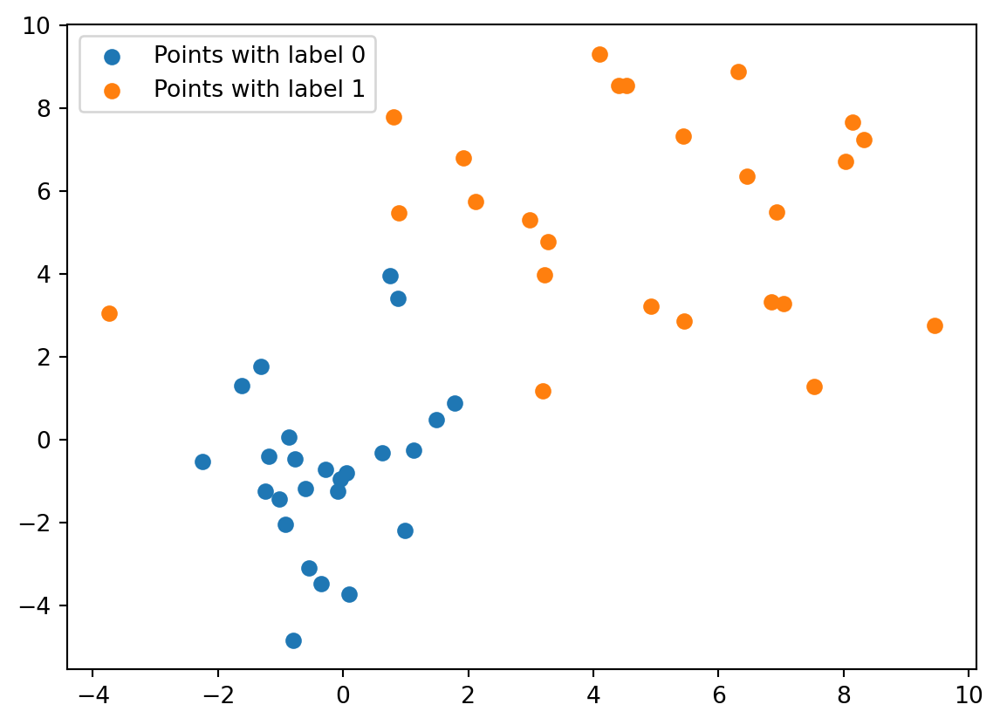
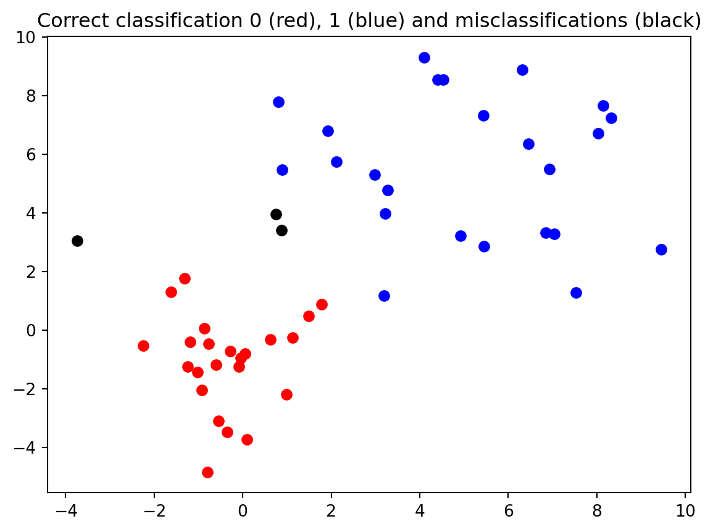
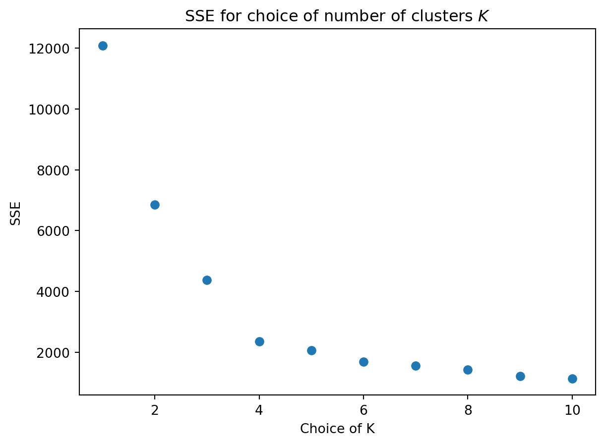

import numpy as np
import matplotlib.pyplot as plt
from sklearn.linear_model import LogisticRegression
from sklearn.datasets import make_blobs
# Display numerical values in NumPy arrays only up to three decimals,
# and suppress scientific notation
np.set_printoptions(precision=3, suppress=True)Exercises Lecture 8 (Sections 10.1-10.2)
Make sure to import Numpy, Matplotlib and Scikit-learn to be able to complete all the exercises.
Disclaimer: For some questions where random numbers are involved, it might happen that your output obtained from running the test input is different than the output given.
This can happen if, despite the use of a random seed, you generate random numbers in a different way than was done in the solution by the teacher. This does not necessarily mean that your answer is wrong. If you are unsure about your solution, ask the teacher.
As an example, you can generate a normally distributed random number with mean 0 and standard deviation 1 withnp.random.normal(0,1)ornp.random.randn(), but these numbers will usually be different. Also, the shape of an array that you fill with random numbers can have an influence on the outcome: The commandnp.random.randn(3,4)does not yield the same 3 \times 4 array asnp.random.randn(4,3).T.
Question 1
In this exercise, we will write a model for logistic regression with two label classes and n features, i.e., we have data points x_i = [x_{i0},\dots,x_{i(n-1)}] \in \mathbb{R}^n. We first write a function that can generate (synthetic) input data for us.
The data set will consist of the set D_0 = \{x_0,\dots,x_{m-1}\} \subset \mathbb{R}^n whose points will get label 0, and set D_1 = \{x_m,\dots,x_{2m-1}\} \subset \mathbb{R}^n whose points will get label 1.
The entries of the points x_i = [x_{i0},\dots,x_{i(n-1)}] \in D_0 for i = 0,\dots,m-1 will be normally distributed with x_{ij} having mean \mu_j^0 and standard deviation \sigma_j^0 for j = 0,\dots,n-1. The entries of the points x_i = [x_{i0},\dots,x_{i(n-1)}] \in D_1 for i = m,\dots,2m-1 will be normally distributed with x_{ij} having mean \mu_j^1 and standard deviation \sigma_j^1 for j = 0,\dots,n-1.
Write a function
synthetic_data()that takes as input four one-dimensonal arrays \mu^k = [\mu_0^k,\dots,\mu_{n-1}^k] and \sigma^k = [\sigma_0^k,\dots,\sigma_{n-1}^k] for k = 0,1, and a number m. It should return a 2m \times n array x whose rows are the data points x_i for i = 0,\dots,2m-1 as specified above, and a vector y defined by y_i= \left\{ \begin{array}{ll} 0 & i = 0,\dots,m-1 \\ 1 & i = m,\dots,2m-1 \end{array}\right.. Note that the first m rows of x correspond to the data points in D_0, and the second m rows to the data points in D_1. Do not use for-loops.Test your function on the following input by re-creating the figure below.
#Fix randomness
np.random.seed(3)
mu1 = np.array([0,0])
sigma1 = np.array([1,2])
mu2 = np.array([5,5])
sigma2 = np.array([3,2])
m = 25
x_data, y_data = synthetic_data(mu1,sigma1,mu2,sigma2,m)
We will next perform a logistic regression on the data points using the sigmoid function f(z) = \frac{1}{1 + e^{-p(z)}} with p(z) = \alpha + \sum_{i=0}^{n-1} \beta_iz_i for z = [z_0,\dots,z_{n-1}] \in \mathbb{R}^n.
Write a function
multi_feature_logistic_regression()that takes as input an m \times n two-dimensional array x whose rows represent data points, and an m-dimensional binary vector y with one label per data point. It should output an array [\alpha,\beta_0,\dots,\beta_{n-1}] with the fitted coefficients of the function f above, as well as an array containing the predicted labels for each data point given by thepredict()method.
Use thefit()function on an instance ofLogisticRegressionto carry out this task. Set thepenaltykeyword argument to be'l1'. This penalty option only works with certain solvers, which you can set with thesolverkeyword argument. Check out the documentation ofLogisticRegressionto find a suitable solver.Test your function on the data generated in part b).
p_coef, y_pred = multi_feature_logistic_regression(x_data,y_data)
print("Coefficients of function p are", p_coef)Coefficients of function p are [-2.125 0.411 0.729]Also create the confusion matrix of the outputted predicted labels (in comparison with the true labels), i.e., the (i,j)-th entry of the matrix contains the number of data points whose true label was i and whose predicted label is j. The matrix should be the following:
[[23 2]
[ 1 24]]- Create the plot below where all data points with predicted and true label 0 are red, all data points with predicted and true label 1 are blue, and all data points whose predicted label is different from its true label are black.

Question 2
The goal of this exercise is to create an implementation of the k-means algorithm from scratch. The input of the final algorithm that we build in the coming parts is a collection of data points x_0,\dots,x_{n-1} \in \mathbb{R}^d given as the rows of an n \times d array x, with x_i = [x_{i0},\dots,x_{i(d-1)}] for i = 0,\dots,n-1.
We start by creating a function that can be used to choose K initial centers for the K-means algorithm.
- Write a function
init_centers()that takes as input an array x as above, and a number K. It should output a matrix containing K rows chosen uniformly at random from the rows in x (without replacement). That is, every row is equally likely to be chosen.
Hint: A function from Section 8.1.2 might be useful here.
Test your function on the input data below.
# Fix randomness
np.random.seed(3)
# Data points
n, d = 10, 3
x = np.random.rand(n,d)
# Center generation
K = 4
centers = init_centers(x,K)
print(centers)[[0.649 0.278 0.676]
[0.441 0.03 0.457]
[0.591 0.024 0.559]
[0.545 0.78 0.306]]We continue with writing a function that returns for every row x_i in x the index k \in \{0,\dots,K-1\} of the center in the set \{c_0,\dots,c_{K-1}\} that is closest to x_i in L^2-norm. This is Step 1 from the K-means algorithm as described in Section 10.2.2.
- Write a function
closest()that takes as input an n \times d array whose rows represent data points x_i, and a K \times d array whose rows represent centers c_0,\dots,c_{K-1}. It should output an n-dimensional array indicating on position i the label/index in \{0,1,\dots,K-1\} of the center that is closest to x_i for i = 0,\dots,n-1.
You are allowed to use thedistance_matrixfunction from thescipy.spatialmodule; check the documentation to see how this function works. The functionnp.argmin()might also be useful in your solution. Do not use for-loops in your solution.
Test your function on the x and centers arrays generated in the test input of part a).
label_closest = closest(x,centers)
print(label_closest)[3 3 1 1 0 2 1 3 3 0]We continue with a function that takes as input an n \times d array whose rows represent data points x_i for i = 0,\dots,n-1, and an n-dimensional array whose i-th entry is label L_i \in \{0,\dots,K-1\} of data point x_i. The function will output new centers \hat{c}_k = \frac{1}{|G_k|} \sum_{i \in G_k} x_i, where G_k = \{i : L_i = k\} for k = 0,\dots,K-1. This is Step 2 of the K-means algorithm described in Section 10.2.2.
- Write a function
new()taking as input the n \times d and n-dimensional arrays described above, and outputs a K \times d array with the \hat{c}_k centers as its rows. You are allowed to use one for-loop in your solution. You may assume that the input data is so that |G_k| > 0 for any k, i.e., every center has at least one data point that is closest to it.
Test your function on the x array from the test input of part a), with labels the label_closest array generated in the test input of part b).
new_center = new(x,label_closest)
print(new_center)[[0.436 0.333 0.806]
[0.275 0.217 0.264]
[0.591 0.024 0.559]
[0.575 0.705 0.413]]We now combine the three functions written in parts a)-c) and define our K-means algorithm.
- Write a function
kmeans()that takes as input an n \times d array whose rows represent data points x_i \in \mathbb{R}^d for i = 0,\dots,n-1, a number of clusters K and a number of iterations T. It should perform T iterations of the K-means algorithm (as in Section 10.2.2), where the initial centers are randomly chosen using your function from part a), and where the functions in parts b) and c) are subsequently performed for T iterations.
Your function should output the final centers as well as an array of labels indicating the closest center for every data point at the end of the algorithm.
Test your function on the input below, which is the make_blobs data used in Section 10.2.
from sklearn.datasets import make_blobs
# Data generation
r = 5
x_data, _ = make_blobs(
n_samples=200, # n = 200
n_features=2, # d = 2
centers=np.array([[-r,-r],[-r,r],[r,r],[r,-r]]),
cluster_std=2.5,
random_state=32,
)
# Number of iterations
T = 100
# Choice of number of clusters to look for
K = 4
# Run K-means algorithm
centers, label_closest = kmeans(x_data,K,T)
# Print found centers
print("The final centers are \n", centers)The final centers are
[[ 5.187 4.922]
[-4.527 5.368]
[ 4.502 -5.287]
[-4.747 -4.874]]Note that these centers are fairly close to the centers chosen to generate the synthetic data with.
Question 3
Recall that the quality of a clustering with centers c_0,\dots,c_{K-1} can be measured in terms of the sum of squared errors (SSE)
\begin{array}{ll} \displaystyle \text{SSE}_{x_0,\dots,x_{n-1}}(c_1,\dots,c_k) & = \displaystyle \sum_{i=0}^{n-1} \min_{k=0,\dots,K-1} ||x_i - c_k||_2^2 \\ & = \displaystyle \sum_{i=1}^{n-1} \min_{k=0,\dots,K-1} \sum_{j=0}^{d-1} (x_{ij} - c_{kj})^2 \end{array}
which aggregates the squared L^2-norm distances of all data points x_i to their closest center. Recall that x_i = [x_{i0},\dots,x_{i(d-1)}] for i = 0,\dots,n-1 and c_k = [c_{k0},\dots,c_{k(d-1)}] for k = 0,\dots,K-1.
- Using your function
closest()from Exercise 2b), define a functionsse()that takes as input an n \times d array x whose rows represent data points x_i \in \mathbb{R}^d, and a K \times d array whose rows represent clusters c_0,\dots,c_{K-1}. It should output the SSE error function defined above. Do not use a for-loop.
As a hint, try to understand the piece of code below first. Use the underlying idea to create a matrix whose rows are x_i - c_{k_i} for i = 0,\dots,n-1, where k_i is the index of the center closest to x_i.
z = np.array([[1,4,3,5,6],[8,1,2,3,5],[6,1,7,9,8],[41,1,17,9,18]])
indices = np.array([1,3,2,0,1,2])
print(z[indices])[[ 8 1 2 3 5]
[41 1 17 9 18]
[ 6 1 7 9 8]
[ 1 4 3 5 6]
[ 8 1 2 3 5]
[ 6 1 7 9 8]]Test your function using the x_data and centers arrays from the test input of Exercise 2d). It should give the following output.
error = sse(x_data,centers)
print(error)2349.133855912266- Write a function
optimal_Kthat takes as input an n \times d array x whose rows represent data points x_i \in \mathbb{R}^d, and numbers K_{\max} and T. It should output a scatter plot with for every K = 1,\dots,K_{\max} the SSE computed using the centers outputted bykmeans(x,K,T)wherekmeans()is the function you constructed in Exercise 2d).
Test your function for K_{\max} = 10, T = 100, and as x the array x_data created in the test input of Exercise 2d). Your figure should look like below. Can you give an interpretation of what you see in the figure?
# Input parameters
T = 100
Kmax = 10
# Create scatter plot
optimal_K(x_data,Kmax,T)